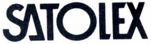
SATOLEX（サトレックス）
ヘッドフォン、マイク等を扱う日本の音響機器ブランド。1990年代後半までヘッドフォンを販売していたが、現在の状況は不明。「ホシデン」の関連会社（100％所有の子会社）と思われるが、ホームページを開設しておらず、現在の活動内容は確認はできない。（＊1）
ネットで検索すると「ホシデン」がサトレックスのヘッドフォンを下請け製造していたとの記述も見られるが、「COMPONENTS LINE-UP 1980」で、「サトレックス」を「星電器製造（現 ホシデン）」のブランドとしている。また初期の型番「DH」はホシデンと同じであり、酷似したモデル（＊2）がある。さらにStereo Sound YEAR BOOKの1979年版で「ホシデン」の全機種が製造中止に、1979-80年版で、「サトレックス」の全機種が新発売となっている。 以上のことから、このサイトではホシデンの一般向けブランドと考える。また製品もヘッドフォンとマイクロホン、ピンケーブルなどしか見かけないのは単独企業では不自然だと思う。
＊1 2015年の「春のヘッドフォン祭 2015」で、20年ぶりにサトレックスブランドのヘッドホンが登場したらしい。型番はホシデン・サトレックス共通の「DH」だったようだ。現在（2021年）では、再び活動を停止したらしい。
＊2 DH-57-S（ホシデン）とDH-570、DH-61-S（ホシデン）とDH-610、DH-80-S（ホシデン）とDH-800、DH-90-Sと（ホシデン）とDH-900
ホシデンの一般向けブランドとしたが、ホシデンブランドのモデルの外観が他社向けのOEM供給品の感じが強い為、このサイトではそれぞれ別のブランドとして扱う。
SATOLEX （サトレックス）の製品を以下のように分類する。（この分類は個人的な意見で、メーカーの分類ではありません）
�T.「ＤＨ」シリーズ
�@ブランド立ち上げ直後の製品群。
DH-570 DH-610 DH-900 DH-910
（動電全面駆動型） DH-800
（２ウェイ型） DH-4000
（コンデンサー型） EH-3500
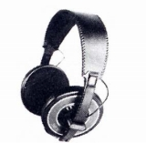
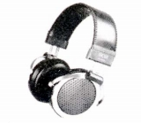
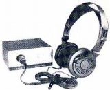
（左 DH-900 中央 DH-800 右 EH-3500)
�A第２段の製品群
DH-1010 DH-1020 DH-2010 DH-2020 DH-2030
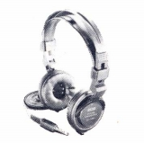 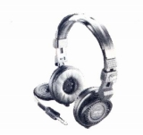
�U.「MS」シリーズ他
�@「MS」シリーズ
ヘッドフォン界全体の小型・軽量化に対応したシリーズ。後半の製品はいっそうの軽量化が進み、さらにはインナーイヤー型も登場する。
MS-1 MS-3 MS-5 MS-11 MS-12 MS-13 MS-15
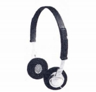 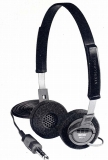 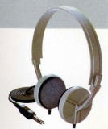
MS-25 MS-36N MS-38 MS-38N MS-42 MS-48
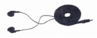
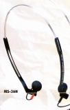
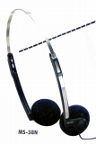
（左 MS-25 中央 MS-36N 右 MS-38N)
�A「SH」シリーズ
「MS」シリーズがさらに小型化した時期に始まった、観賞用機のシリーズ
SH-5V SH-12E SH-58 SH-68 SH-98E
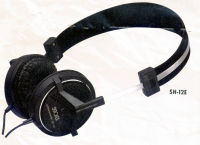 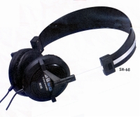
SH-15CD SH-30CD SH-100CD SH-150CD
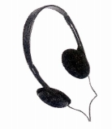
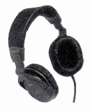
（左 SH-30CD 右 SH-150CD)
�B「SX」シリーズ
「MS」シリーズ終了後のインナーイヤー型のシリーズ
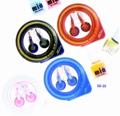
(SX-35)
�C「SA」シリーズ
「MS」シリーズ終了後の軽量機のシリーズ
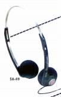
(SA-49)�C「DH」シリーズ
ブランド末期？＊のインナーイヤー型
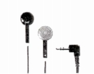
(DH-20)＊「Stereo Sound YEAR BOOK」では1999年及び2000年版では記載がない。